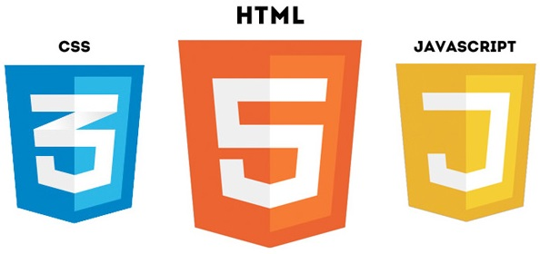
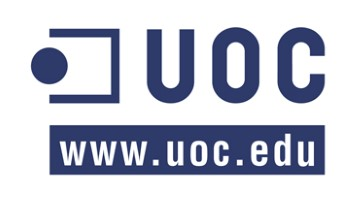

Com hem pogut veure, HTML5 incorpora nombroses utilitats per tractar gràfics i multimèdia, com els elements audio, video i object o la nova API WebRTC, per afegir àudio i vídeo i fins i tot comunicar-se en temps real; o bé canvas i svg per a crear i tractar gràfics. Aquestes utilitats ofereixen unes capacitats extraordinàries per crear llocs web interactius i dinàmics, molt propis de la Web 2.0 i de les exigències dels usuaris digitals. Ara bé, per realitzar accions més avançades cal fer ús no només del llenguatge HTML5 sinó també dels fulls d'estil CSS i del llenguatge de scripting JavaScript i tenir-ne forç coneixements.
Així, és la combinació de HTML5+CSS+JS (mé altres tecnologies extra, en certes ocasions) les que afegeixen un gran valor a un lloc web.
En cada tema tractat s'ha afegit un apartat "Més informació" en el qual s'han reunit alguns recursos extra per tal d'ampliar coneixements sobre la matèria i que es recomana consultar per tal de seguir amb l'aprenentatge dels recursos oferts per HTML5 o bé per resoldre dubtes.
Per una altra banda, com a recomanació, es proposa una sèrie d'eines online per escriure codi i veure'n directament els resultats que podem facilitar l'aprenentatge i la experimentació amb les diferents possibilitats d'HTML5, combinades amb CSS i codi JavaScript.
Aquesta guia sobre les novetats en gràfics i multimèdia del llenguatge HTML5 ha estat elaborada per a l'assignatura Tècniques d'Edició Electrònica de la Universitat Oberta de Catalunya.
Qualsevol dubte, suggerència, error detectat o altres comunicacions relacionades amb el lloc web seran molt benvingudes i les podeu fer arribar a la meva bústia de correu electrònic: smarcosb@uoc.edu
